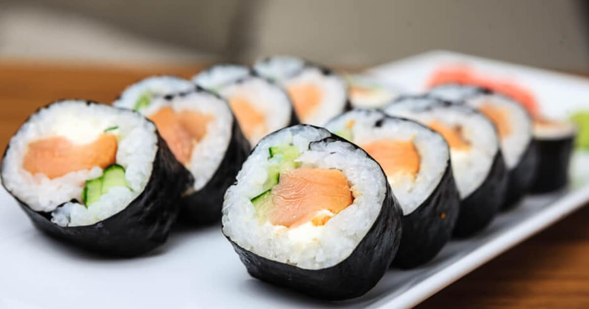

Origem:Japão
Considerado um dos pratos-chave da culinária japonesa, o hossomaki é uma espécie de enrolado de sushi
Coloque o nori por cima da esteira.
Forme uma camada de arroz por cima do nori.
Cubra o meio com tiras de salmão.
Com ajuda da esteira de bambu, enrole o hossomaki como se fosse um rocambole, apertando bem para firmar.
Molhe a faca levemente e corte em 10 fatias.
Sirva com molho shoyu a gosto.